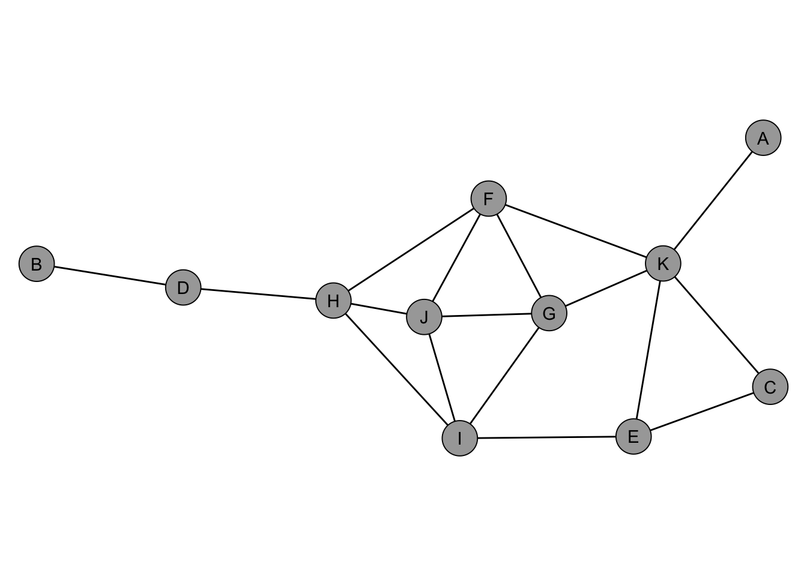
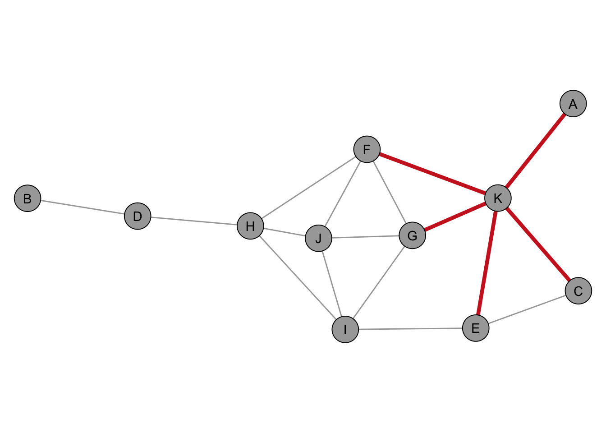
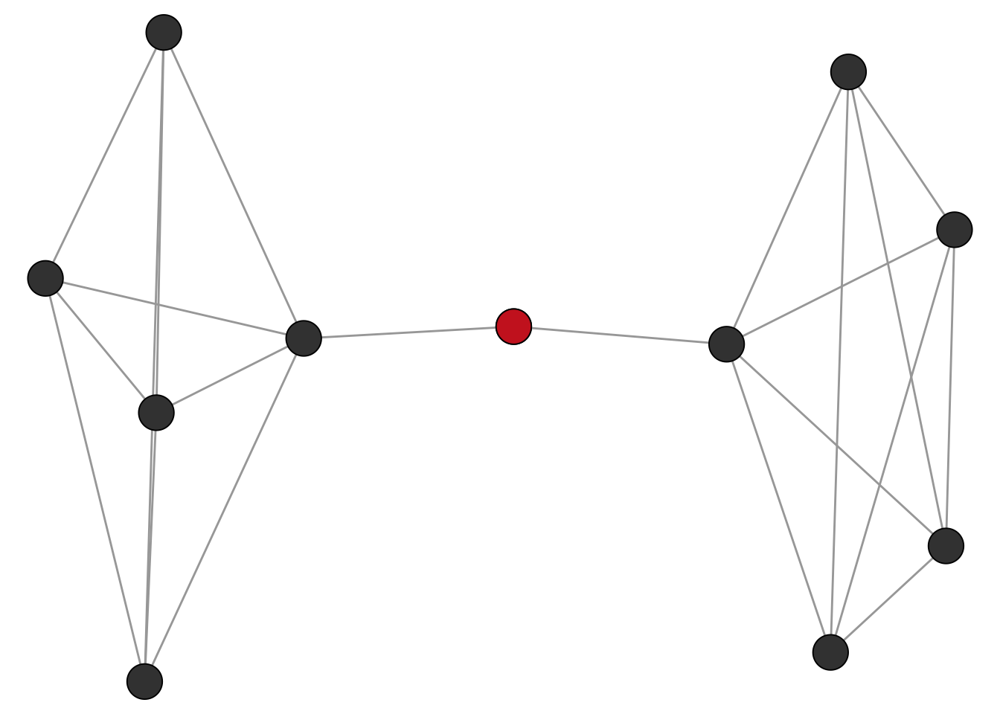
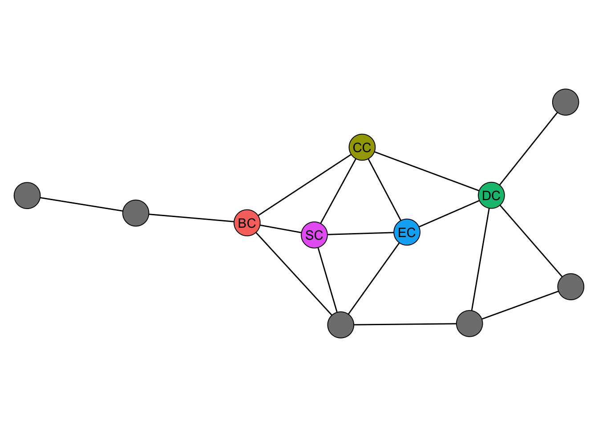
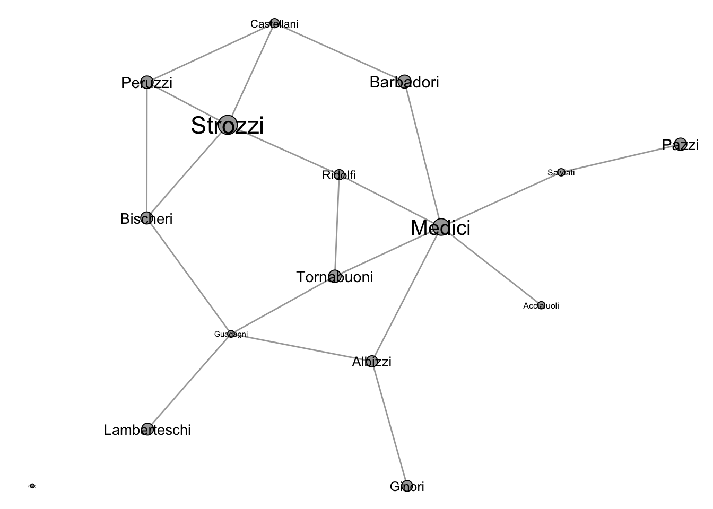

library(igraph)
library(netrankr)
library(networkdata)5 Centrality
Loading required package: ggplot25.1 Introduction
In this chapter, we learn about network centrality, a key concept for identifying the most influential nodes within networks. In a nutshell, a measure of centrality is an index that assigns a numeric values to the nodes of the network. The higher the value, the more central the node. “Being central” is a very ambiguous term and it is thus no surprise that there exists a large variety of indices that assess centrality with very different structural properties of the network.
[INSERT PERIODIC TABLE]
5.2 Centrality Indices igraph
The package igraph implements the following 10 indices:
- degree (
degree()) - weighted degree (
strength()) - betweenness (
betweenness()) - closeness (
closeness()) - eigenvector (
eigen_centrality()) - alpha centrality (
alpha_centrality()) - power centrality (
power_centrality()) - PageRank (
page_rank()) - eccentricity (
eccentricity()) - hubs and authorities (
authority_score()andhub_score()) - subgraph centrality (
subgraph_centrality())
To illustrate some of the indices, we use the “dbces11” graph which is part of the netrankr package.
data("dbces11")
degree simply counts the number of neighbors a node has.
degree(dbces11)A B C D E F G H I J K
1 1 2 2 3 4 4 4 4 4 5 
closeness computes the shortest path distances among nodes. The most central node has the minimum distance to all other nodes (Since high scores are associated with central nodes, the distances are inverted).
closeness(dbces11) A B C D E F G H
0.0370370 0.0294118 0.0400000 0.0400000 0.0500000 0.0588235 0.0526316 0.0555556
I J K
0.0555556 0.0526316 0.0555556 The animation below gives an intuition on the calculation for one node. 
betweeness is the number of shortest paths that pass through a node (divided by the total number of shortest paths)
betweenness(dbces11) A B C D E F G H
0.00000 0.00000 0.00000 9.00000 3.83333 9.83333 2.66667 16.33333
I J K
7.33333 1.33333 14.66667 To get an intuition what it means to have a high betweenness, check the network below.

Any shortest path from the right will pass through the red node and vice versa. The red note is thus a sort of “gatekeeper” for any information that is passed from left to right.
eigenvector centrality extends the idea of degree by assuming that a node is central if it is connected to other central nodes.
eigen_centrality(dbces11)$vector A B C D E F G H
0.2259630 0.0645825 0.3786244 0.2415182 0.5709057 0.9846544 1.0000000 0.8386195
I J K
0.9113529 0.9986474 0.8450304 subgraph centrality is a bit more abstract but what it does is summing up all closed walks weighting them by the inverse factorial of its length.
subgraph_centrality(dbces11) A B C D E F G H I J
1.82510 1.59540 3.14857 2.42309 4.38713 7.80726 7.93941 6.67278 7.03267 8.24212
K
7.38956 The remaining indices are mostly designed for directed networks, page rank being the prime example. Note, though that the indices above can also be applied to directed networks.
If we highlight the most central node for the calculated indices, we get the following.

So each index picks a different node as most central. While this is just a toy example, it highlights how influential the choice of indices can be in empirical settings.
5.3 Centrality indices sna
The sna package implements roughly the same indices as igraph but adds:
- flow betweenness (
flowbet()) - load centrality (
loadcent()) - Gil-Schmidt Power Index (
gilschmidt()) - information centrality (
infocent()) - stress centrality (
stresscent())
5.4 Other Centrality Packages
There are also some dedicated centrality packages, such as centiserve, CINNA, influenceR and keyplayer. The biggest in terms of implemented indices is currently centiserve with a total of 33 indices.
library(centiserve)Loading required package: Matrixas.character(lsf.str("package:centiserve")) [1] "averagedis" "barycenter" "bottleneck"
[4] "centroid" "closeness.currentflow" "closeness.freeman"
[7] "closeness.latora" "closeness.residual" "closeness.vitality"
[10] "clusterrank" "communibet" "communitycent"
[13] "crossclique" "decay" "diffusion.degree"
[16] "dmnc" "entropy" "epc"
[19] "geokpath" "hubbell" "katzcent"
[22] "laplacian" "leaderrank" "leverage"
[25] "lincent" "lobby" "markovcent"
[28] "mnc" "pairwisedis" "radiality"
[31] "salsa" "semilocal" "topocoefficient" The description of CINNA says “Functions for computing, comparing and demonstrating top informative centrality measures within a network.” Most of the indices in the package are imported from other package, such as centiserve. In addition, there are:
- Dangalchev closeness (
dangalchev_closeness_centrality()) - group centrality (
group_centrality()) - harmonic closeness (
harmonic_centrality()) - local bridging centrality (
local_bridging_centrality())
The function calculate_centralities() can be used to calculate all applicable indices to a network. The primary purpose of the package is to facilitate the choice of indices by visual and statistical tools. If you are interested in the details, see this tutorial and this vignette.
influenceR and keyplayer are comparably small packages which implement only a small number of indices.
5.5 Thoughts
The choice of indices can be overwhelming and little guidelines exist on when to choose what. The worst thing to do in any case is to apply a handful of indices and pick the result that suits your interpretation best. In best case, you have substantive arguments to apply an index and the result does match the hypothesis (or not).
5.6 Use case: Florentine Families
A classic example application of centrality indices is the “Florentine Families” dataset, which is included in the networkdata package.
data("flo_marriage")
Th network shows marriage ties among Renaissance Families in Florence. Marriages at that time were strategic to improve the standing of families in society. The size of the names is proportional to the wealth of the families. Although the Strozzi were the wealthiest family, it was ultimately the Medici who became the most powerful family. This is in part due to their central position within this marriage network.
The table bellow shows the ranking for the four most commonly used centrality indices (1=top rank).
| name | degree | betweenness | closeness | eigen |
|---|---|---|---|---|
| Acciaiuoli | 13.5 | 14 | 11.5 | 12 |
| Albizzi | 6.5 | 3 | 3.5 | 9 |
| Barbadori | 10.5 | 8 | 6.5 | 10 |
| Bischeri | 6.5 | 6 | 8.0 | 6 |
| Castellani | 6.5 | 10 | 9.5 | 8 |
| Ginori | 13.5 | 14 | 13.0 | 14 |
| Guadagni | 2.5 | 2 | 5.0 | 5 |
| Lamberteschi | 13.5 | 14 | 14.0 | 13 |
| Medici | 1.0 | 1 | 1.0 | 1 |
| Pazzi | 13.5 | 14 | 15.0 | 15 |
| Peruzzi | 6.5 | 11 | 11.5 | 7 |
| Pucci | 16.0 | 14 | 16.0 | 16 |
| Ridolfi | 6.5 | 5 | 2.0 | 3 |
| Salviati | 10.5 | 4 | 9.5 | 11 |
| Strozzi | 2.5 | 7 | 6.5 | 2 |
| Tornabuoni | 6.5 | 9 | 3.5 | 4 |
No matter what structural feature we consider to be important, the Medici always have the most advantageous position.